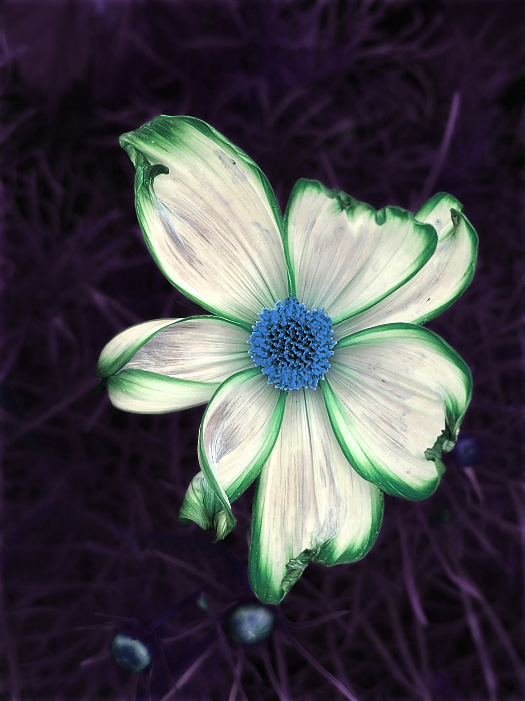
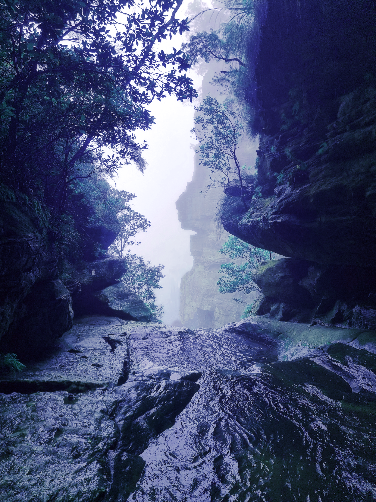
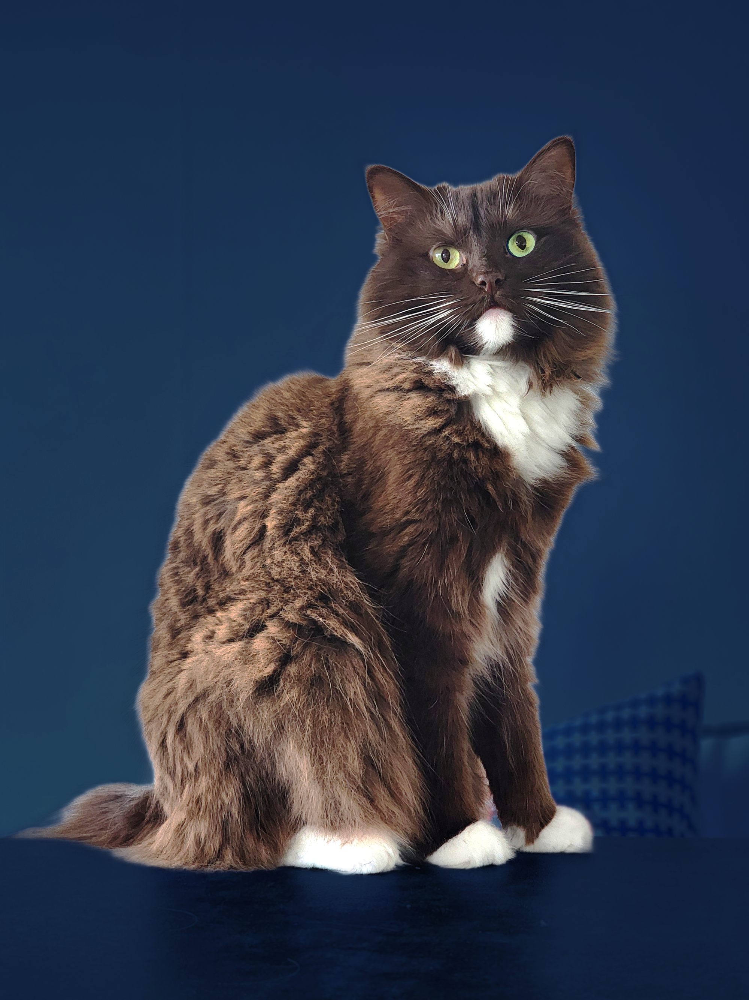

Om uppgiften
I den här uppgiften har jag arbetat med bildredigering för att få olika bilder att passa ihop och få en liknande stil. Jag har bland annat justerat ljus, färger och beskärning. Jag har använt Photopea för att redigera bilderna.
Min bildserie


